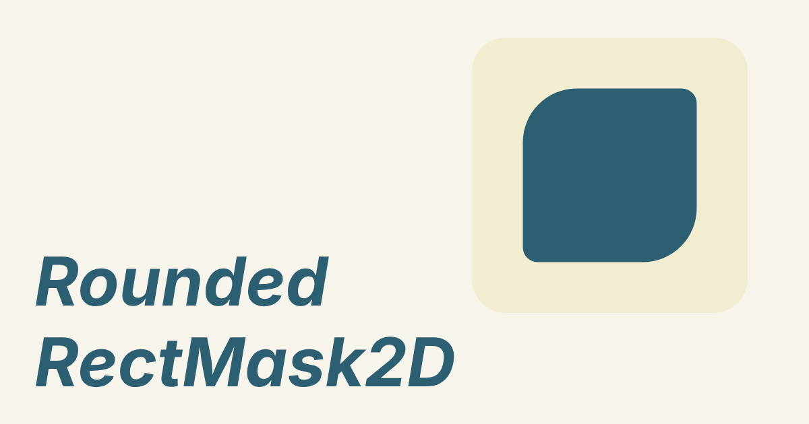
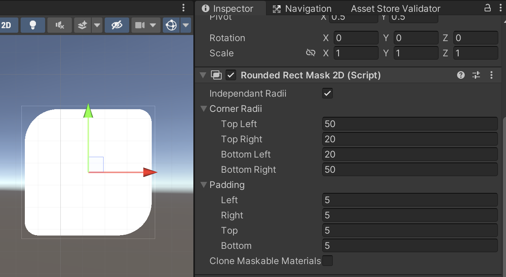

Rounded Rect Mask 2D

available on the Asset Store
Documentation

Basics
- All Graphics (Visuals & Interactions) components child of the Rounded Mask need the Default UI (Rounded Mask) material to work.
- All TextMeshPro texts need the TMP SDF-Mobile (Rounded Mask) material inside the TMP_FontAsset that needs to work with the rounded corners. If your text is only clipped on the straight edges of the mask, they don't need to be changed.
- You will need one Default UI (Rounded Mask) material per RoundedRectMask2D radius configuration. If you always use the same corners throughout your project, you can use the Material provided in the package. Same for the TMP_FontAssets.
- If you have different radii in your project, either duplicate the materials, or tick the checkbox Clone maskable materials on Start to automatically create new instances of the materials (for both Default UI & TMP_FontAsset's material).
Limitations
- As Rounded RectMask2D uses a special UI shader to work, it can only be used with normal UI (ie: Images with no special material). If you have custom UI shaders for your UI you will need to tweak them to support the RoundedRectMask2D component (otherwise the corners will not be correctly clipped).
- Moreover, you will need one Material per corners configuration. If you always use the same values, you can use one Material for all of your UI, but otherwise, RoundedRectMask2D can auto instantiate your materials at runtime, allowing you to have any mask values.
- Softness doesn't work with RoundedRectMask2D. If you need softness in your mask, you will have to use both RoundedRectMask2D & a regular RectMask2D nested into each other.
Custom Shaders
If you have custom UI shaders and would like them to work with the RoundedRectMask2D component, you will need to edit them, to support the feature. You can check how it's done in the custom Shaders (UI Default & TMP_SDF Mobile).
Here is what you need to do:
- Either move your shaders to the AntoineCherel/RoundedRectMask2D/Shaders folder, or copy & paste the RoundedMaskCommon.hlsl library to your custom shader's folder
- in the Pass, include the library
#include "RoundedMaskCommon.hlsl"
- in the Vertex to Fragment or Vertext to Pixel struct, add
float3 posLocal : TEXCOORD8;
- fill it in the V2F or V2P function
OUT.posLocal = v.vertex.xyz;
- in the frag or pixel return function, replace the existing clipping method by
clip( RMUnityUIClipRect(IN.posLocal.xy, _ClipRect, _ClipRectRadii) - 0.5);
all of these added lines should be encapsulated inside #ifdef UNITY_UI_CLIP_RECT statements.
If something goes wrong double check with the implemented shaders inside the Shaders folder.
You can also reach out to me contact (at) antoinecherel.dev
Credits
Unity Plugin, developped by Antoine Cherel